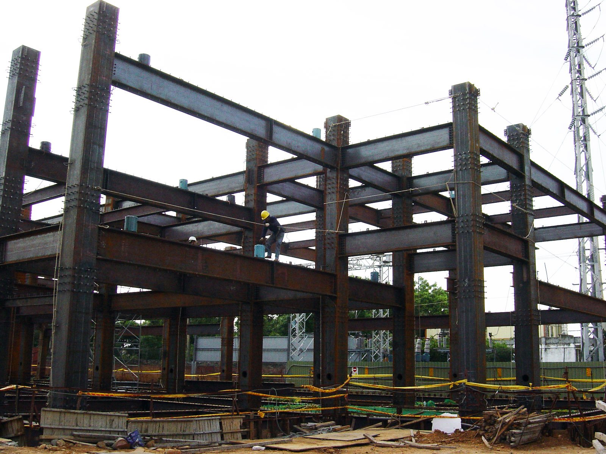

期末實作測試 學號:91135152 姓名:蔡宗龍
工程介紹
鋼構
施工缺點
- 費用較高：與傳統混凝土建築相比，鋼構的材料及施工成本通常較高。
- 施工期較長：雖然鋼構建築的組裝速度較快，但前期的設計、製造及運輸等步驟可能需要較長的時間。
- 防火與耐火需求：鋼材的防火性能較差。
- 環境保護要求：鋼構的製造過程會產生大量的碳排放。
- 隔音及隔熱性能：在某些情況下，鋼構建築的隔音及隔熱性能較差。
施工優點
- 強度高：鋼材具有優異的抗拉強度和抗壓強度，能夠承受較大的荷載。
- 施工速度快：相比傳統的混凝土建築，鋼構建築的組裝速度通常更快。
- 資源節省：鋼材可以重複使用和回收。
- 設計自由度高：鋼材可以輕松製造成各種形狀和尺寸。

施工用途
鋼構施工由於其特殊的性能和優勢，在各種建築領域中都有廣泛的應用
工業廠房、倉庫、物流中心等大跨度、大空間的建築物常常選擇鋼構施工
，因為鋼材能夠提供足夠的強度和支撐能力，同時搭建速度快。
商業中心、購物中心、辦公大樓等常常使用鋼構施工，因為可以快速完成建築
，並且具有靈活的設計自由度，可以滿足不同的建築設計需求。